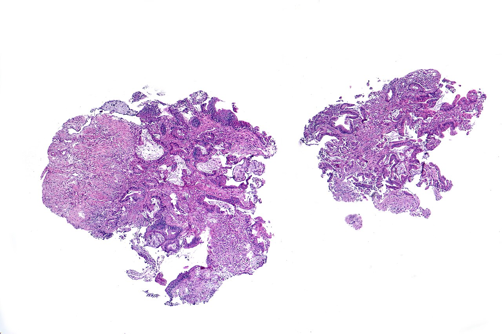
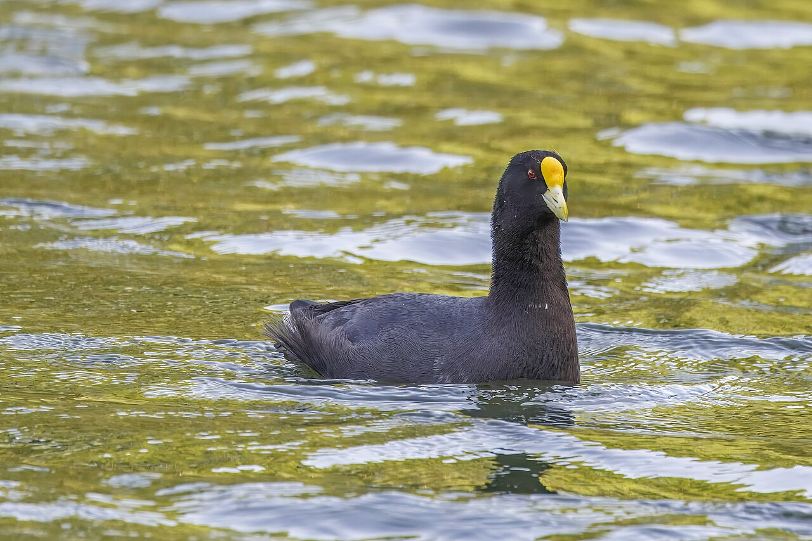
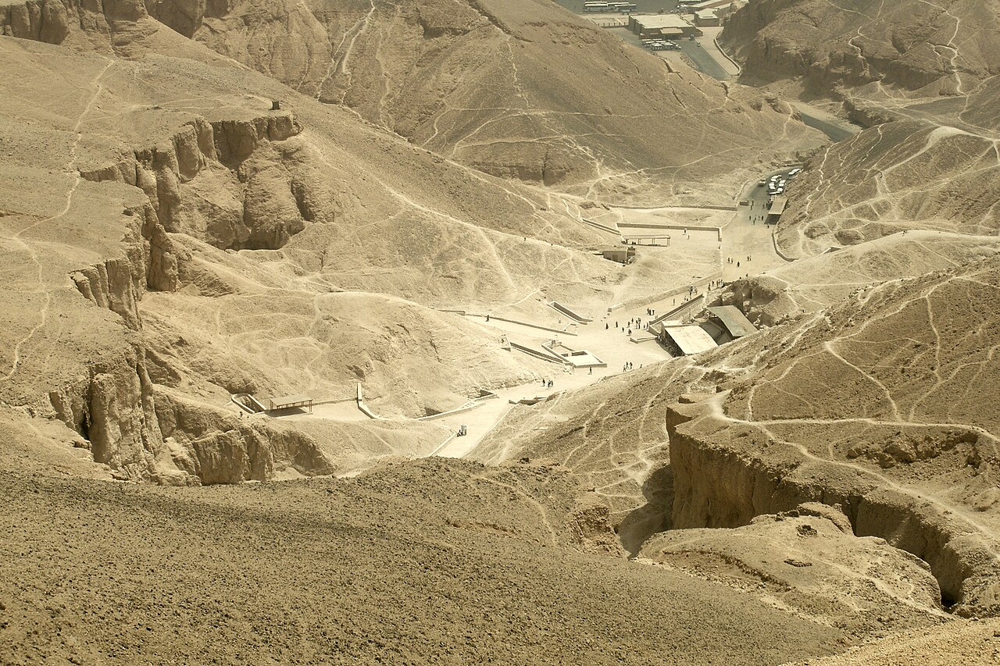

Lula.
diario de la mañana — el mundo, tu ciudad y lo que te asombra
Buen día. Día de neblina temprano y después mejora: de 16° a 25°, con una probabilidad de lluvia que va del 10 al 40 % según el momento. Afuera pasó algo grande anoche: en Estados Unidos los demócratas dieron vuelta las dos cámaras. Y acá la ciencia es de las que te van a interesar por el método: un ensayo que pone la inmunoterapia antes de la cirugía en cáncer de colon, con resultados muy buenos y un montón de letra chica.
- El mundo en cinco minutos3'
- Argentina y Buenos Aires2'
- Ciencia: inmunoterapia antes del bisturí7'
- Mirá a tu alrededor2'
- Receta de estación2'
- La palabra del día1'
- Le français du matin2'
- English corner3'
- Letras argentinas: «El matadero»4'
- Hoy en la historia · un lugar2'
- Lo que me asombra hoy1'
- Pasatiempo: sudoku medio12'
- Cuaderno: repaso, quiz y escritura4'
Los demócratas se quedaron con las dos cámaras
Según los conteos de anoche —preliminares, y con diferencias entre medios—, el Partido Demócrata superó los 218 escaños necesarios en la Cámara de Representantes y además dio vuelta el Senado, que los republicanos controlaban 53 a 47. Hubo resultados resonantes: en Texas, James Talarico le ganó la banca a Ken Paxton; en Maine cayó Susan Collins. Las coberturas atribuyen el vuelco a la economía, a los precios y al desgaste por la guerra en Irán.
Por qué nos importa: por el bolsillo, no por la ideología. Lo que miraban las mesas locales no era el resultado en sí sino qué pasa con el respaldo del Tesoro estadounidense a la Argentina: un Congreso en manos de la oposición reduce el margen del secretario del Tesoro para sostener acuerdos financieros con otros países sin pasar por el Capitolio. Eso explica por qué ayer, en plena elección ajena, el riesgo país argentino marcó su peor valor en un año.
Y además: arranca hoy en Madrid la Cumbre Iberoamericana, con la gira del papa León XIV por Uruguay, Argentina y Perú como telón de fondo —empieza el viernes 6—. Sigue en Wuzhen la Conferencia Mundial de Internet. Y la ONU terminó de elegir a cinco jueces de la Corte Internacional de Justicia.
Peor valor en un año: el riesgo país llegó a 834 puntos
Los números de ayer: el riesgo país trepó a la zona de 830 puntos —según la fuente, entre 829 y 834— y quedó en su nivel más alto en doce meses, con el índice acumulando más de 45 % de suba en el año. El dólar minorista del Banco Nación llegó a $1.570 y el mayorista a $1.551. El Banco Central no compró divisas y las reservas cayeron unos US$ 148 millones.
Cómo leer un día así: cuando el riesgo país sube y el dólar sube junto con él, la presión es financiera y no comercial: no es que falten dólares de exportación, es que el que tiene pesos quiere cubrirse. Es la diferencia entre un problema de caja y un problema de confianza, y se arregla de maneras distintas.
Para hacer en la ciudad
- Desde el viernes, el Papa: la gira de León XIV por la región empieza el 6 y termina el 17 de noviembre. Si tenés que moverte por el centro esos días, mirá antes los cortes.
- Miércoles de biblioteca: la Biblioteca Nacional (Agüero 2502) tiene sala de lectura abierta y muestras gratuitas; el edificio de Clorindo Testa, solo, ya justifica la visita.
Inmunoterapia antes de operar: el ensayo UNICORN en cáncer de colon
De qué estamos hablando: en cáncer de colon operable, lo clásico es operar primero y, si hace falta, dar quimioterapia después. La idea neoadyuvante invierte el orden: tratar antes de la cirugía, con el tumor todavía adentro. Para la inmunoterapia eso tiene una lógica fuerte: mientras el tumor está presente, hay antígeno disponible y los ganglios linfáticos de la zona —que todavía no se extirparon— pueden educar linfocitos contra él. Este ensayo de fase 2 publicado en Nature Medicine prueba eso en 56 pacientes.

Quién es quién
- dMMR / MSI-H: tumores con el sistema de reparación de apareamientos erróneos roto (los genes MLH1, MSH2, MSH6, PMS2). Acumulan miles de mutaciones, sobre todo en microsatélites, y por eso muestran muchos neoantígenos: son los que mejor responden a inmunoterapia.
- pMMR / MSS: los que tienen ese sistema intacto. Son la enorme mayoría —alrededor del 85 % de los cánceres de colon— y, hasta ahora, los que no respondían a inmunoterapia. Ahí está el interés real de este trabajo.
- Botensilimab: un anticuerpo anti-CTLA-4 de nueva generación, con el Fc modificado para unirse mejor a los receptores Fcγ activadores. La idea es doble: sacar el freno al linfocito y además reclutar células innatas, buscando funcionar en tumores «fríos».
- Balstilimab: un anti-PD-1, el freno clásico que se bloquea en la sinapsis entre el linfocito T y la célula tumoral.
- Respuesta patológica mayor (MPR): el criterio de valoración. Significa que en la pieza quirúrgica queda 10 % o menos de tumor viable. Si no queda nada, se llama respuesta patológica completa.
Qué encontraron
- El diseño: cuatro cohortes no aleatorizadas de 14 pacientes cada una, con cáncer de colon localmente avanzado operable, tratados con un curso corto preoperatorio de botensilimab solo o combinado con balstilimab.
- En los dMMR/MSI-H con la combinación: los 14 de 14 tuvieron respuesta patológica mayor, y 13 de ellos respuesta completa. Es un resultado extraordinario, aunque en el grupo donde más se esperaba.
- En los pMMR/MSS con la combinación —lo importante—: 36 % de respuesta patológica mayor y 29 % de respuesta completa, en un subtipo que históricamente no responde a inmunoterapia.
- Recaídas: al corte de datos de febrero de 2026, ningún paciente tratado con la combinación había recaído, con seguimientos medianos de 19,2 meses (pMMR) y 16,7 (dMMR).
- Lo que viene: ampliaron el ensayo a un esquema de 8 semanas en 29 pacientes pMMR, para diseñar un fase 3 aleatorizado.
Lectura crítica
- Catorce pacientes por cohorte. Con ese tamaño, el intervalo de confianza de un 36 % es enorme: el verdadero valor podría estar entre poco más del 10 % y más del 60 %. No es un defecto del estudio —es un fase 2, sirve para decidir si vale la pena seguir—, pero cambia cómo hay que leer el número.
- Sin grupo control y sin aleatorización. No sabemos cómo le habría ido a esos mismos pacientes operados directamente.
- La respuesta patológica es un subrogante. Correlaciona con supervivencia en varios tumores, pero no es supervivencia. «Ninguno recayó» con año y medio de seguimiento y 14 pacientes es alentador y no es evidencia dura.
- Quién paga. Las dos drogas son del mismo laboratorio, que además difundió los resultados por comunicado. No invalida nada —está publicado y revisado— pero conviene saber de dónde viene el entusiasmo de los adjetivos.
La conexión con lo que estudiás
Dos cosas para llevarse. Una es inmunología de tumores en estado puro: por qué un tumor con muchas mutaciones es visible para el sistema inmune y uno «limpio» no, y qué se intenta para volver visible a lo invisible —acá, un anticuerpo con el Fc rediseñado, que es ingeniería de proteínas aplicada—. La otra es de diseño experimental, y es la que más te va a servir: cuando leas un resultado espectacular, mirá primero el n, después si hubo control, y recién después el porcentaje. En ese orden.
«Neoadjuvant botensilimab with or without balstilimab in pMMR and dMMR colon cancer: the phase 2 UNICORN trial». Nature Medicine, 2 de noviembre de 2026, doi:10.1038/s41591-026-04710-1
Biotec en el mundo real · La Fundación Instituto Leloir
Si el tema es investigación biomédica argentina, el lugar es el Instituto Leloir, en Patricias Argentinas 435, pegado al Parque Centenario.
- De dónde viene: de Luis Federico Leloir, Nobel de Química 1970 por descubrir los nucleótidos-azúcares —UDP-glucosa y compañía—, las moléculas con las que la célula activa un azúcar antes de poder usarlo para fabricar glucógeno o glicosilar una proteína. Lo hizo con equipos precarios y presupuesto mínimo, y esa es la mitad de la leyenda.
- Qué se hace hoy: neurodegeneración (Alzheimer, priones), biología del cáncer, virología, plantas y bioinformática estructural, en un modelo de instituto privado sin fines de lucro con investigadores del CONICET.
- Por qué mirarlo si estás terminando: es uno de los lugares del país donde se puede hacer una tesis doctoral con infraestructura seria, y tiene convocatorias de becas y un programa de visitas.
- Salida laboral: investigación básica y traslacional, plataformas (microscopía, proteómica, secuenciación), gestión de la ciencia y vinculación tecnológica.
Ciencia en la vida cotidiana · Por qué la carne cambia de color en la heladera
No es que se pudra: es una reacción de oxidación perfectamente ordenada. El color de la carne lo da la mioglobina, la proteína que guarda oxígeno en el músculo. Recién cortada está en forma de desoximioglobina, de un rojo púrpura oscuro. Al exponerse al aire se une al oxígeno y pasa a oximioglobina, el rojo cereza brillante que asociamos con «fresca» —ese cambio tarda unos veinte minutos y se llama «florecimiento»—. Y con el tiempo el hierro del hemo se oxida de Fe²⁺ a Fe³⁺: queda metamioglobina, marrón grisácea.
El dato que sirve: el marrón no significa que esté mala. Significa que el hierro se oxidó, que es un proceso químico independiente del crecimiento bacteriano. Para saber si está mal, el olor y la textura mandan, no el color. Y al revés: el envasado al vacío mantiene la carne violácea aunque esté perfecta, porque sin oxígeno no hay florecimiento.
El sauce, que tiene una farmacia adentro, y la gallareta


_Laguna_Nimez.jpg){kind=link}
El árbol: sauce llorón
| Nombre científico | Salix babylonica (Salicáceas). Viene de China, no de Babilonia: el nombre se lo puso Linneo por un error de interpretación bíblica. El sauce criollo de las islas, en cambio, es Salix humboldtiana. |
|---|---|
| Cómo reconocerlo | Imposible no hacerlo: ramas colgantes hasta el piso, hoja angosta y larga, y siempre cerca del agua. Es de los primeros en brotar y de los últimos en perder la hoja. |
| La química | Su corteza tiene salicina, un glucósido que el cuerpo convierte en ácido salicílico. Hipócrates ya recomendaba masticar corteza de sauce para el dolor y la fiebre; en 1828 se aisló la salicina, y en 1897, en los laboratorios Bayer, se la acetiló para que no destrozara el estómago. Eso es la aspirina. Toda esa historia empieza en el árbol que te da sombra en el Rosedal. |
El ave: gallareta chica
| Nombre científico | Fulica leucoptera (Rállidos, la familia de los burritos y las pollas de agua). No es un pato: es prima de las grullas. |
|---|---|
| Cómo reconocerla | Negra, con el escudete frontal y el pico amarillos, en los lagos de Palermo y en la Reserva. Nada moviendo la cabeza adelante y atrás a cada brazada, como si caminara en el agua. |
| Lo asombroso | No tiene membrana interdigital como el pato: tiene lóbulos, unas aletas laterales en cada dedo que se abren al empujar y se pliegan al adelantar la pata. Es una solución distinta al mismo problema, evolucionada por separado, y además le permite caminar por el barro sin hundirse, cosa que un pato hace peor. Por eso la ves tanto en la orilla como en el agua. |
Escabeche de zanahorias, cebolla y laurel
Veinte minutos de cocina, y después tres días esperando: mejora con el tiempo.
Ingredientes
- 500 g de zanahorias en rodajas gruesas
- 2 cebollas en pluma, 1 morrón en tiras
- 1 taza de vinagre de alcohol o de vino blanco
- 1 taza de aceite de oliva o neutro, ½ taza de agua
- Laurel, pimienta en grano, ajo, sal
Pasos
- Blanqueá la zanahoria 4 minutos en agua hirviendo. Tiene que quedar firme.
- Herví vinagre, agua, aceite, laurel, pimienta, ajo y sal, 5 minutos.
- Poné los vegetales en frascos limpios y cubrilos por completo con el líquido caliente.
- Tapá, dejá enfriar y a la heladera. Comelo a partir del tercer día.
La química de la receta
Qué conserva, exactamente: el pH. Casi ninguna bacteria peligrosa crece por debajo de pH 4,6, y ese número no es caprichoso: es el límite por debajo del cual Clostridium botulinum no puede germinar ni producir toxina. Un escabeche con una proporción generosa de vinagre queda alrededor de pH 3,5-4. El aceite de arriba no conserva: es una barrera de oxígeno, y de hecho, sin acidez suficiente, el aceite empeora las cosas porque crea el ambiente sin aire que el botulismo prefiere. Por eso nunca hay que hacer «conservas en aceite» sin acidificar.
Por qué se blanquea la zanahoria: para inactivar las enzimas propias —sobre todo peroxidasas y pectinmetilesterasas— que, si quedan activas, van ablandando y apagando el color durante el almacenamiento. Cuatro minutos alcanzan; más tiempo y la pectina se degrada y queda blanda.
Y por qué mejora al tercer día: porque la difusión es lenta. El ácido, la sal y los compuestos aromáticos del laurel y la pimienta tienen que atravesar el tejido vegetal, y eso lleva horas o días según el grosor del corte. Lo que cambia no es la receta: es el tiempo.
aspirina sustantivo
A- (de acetil) + spir (de Spiraea ulmaria, la planta de la que también se obtenía ácido salicílico) + -ina → Aspirin, marca registrada de Bayer (1899) → aspirina
El nombre es un acrónimo comercial, armado en una oficina: la a del grupo acetilo que se le agregó al ácido salicílico, spir por Spiraea —el género de la reina de los prados, otra planta rica en salicilatos, de donde viene también «ácido espírico»— y el sufijo -ina, que en la época sonaba a fármaco. Era una marca, con todas las letras.
Lo que la volvió nombre común fue una guerra. Alemania perdió la Primera Guerra Mundial y en el Tratado de Versalles tuvo que ceder, entre otras cosas, varias marcas: en Francia, Estados Unidos y el Reino Unido, aspirin pasó a ser un término genérico que cualquiera podía usar. En otros países Bayer conservó la marca —por eso en la Argentina «Aspirina» con mayúscula sigue siendo de Bayer y lo demás se llama «ácido acetilsalicílico»—. Es, probablemente, el único caso de una palabra del diccionario que cambió de estatus por un tratado de paz.
Je paie par carte
— Ce sera tout ?
— Oui, c'est tout. Je paie par carte, s'il vous plaît.
— Bien sûr. Vous voulez un sac ?
— Non merci, j'en ai un.
| ce sera tout ? | ¿eso es todo? [se se-RÁ TU] |
|---|---|
| je paie par carte | pago con tarjeta [she pe par KART] |
| un sac | una bolsa [an SAK] |
| j'en ai un | tengo uno [shan-NE AN] |
Un truco
Apareció en, el hermano de aquella y de «on y va». Si y reemplaza un lugar, en reemplaza una cantidad o un «de esto»: j'en ai un (tengo uno de eso), j'en veux deux (quiero dos), j'en ai assez (tengo suficiente… o estoy harta, según el tono). En castellano casi siempre se omite, y por eso cuesta: donde vos decís «tengo uno», el francés necesita decir «tengo uno de ello».
What the willow knew
It is a pleasing story and a misleading one. Willow bark eases pain; chemists isolate the active compound; the compound becomes a drug. Told that way, nature appears to have done the hard part, with the laboratory merely tidying up afterwards. The opposite is closer to the truth. The bark was effective enough to be remembered for two thousand years and crude enough to ruin the stomachs of the people who relied on it, and bridging that gap took a century of chemistry that had nothing to do with willows.
Plants do not manufacture compounds for our benefit. They manufacture them to poison insects, to deter grazing, to signal to each other. That any of these molecules should happen to fit a human receptor is, in evolutionary terms, a coincidence — a fortunate one, given how many of our drugs began this way, but a coincidence nonetheless. The plant was not offering a remedy; we were eavesdropping on a conversation held in a language we are only distantly related to.
Which is why "natural" tells you nothing about whether something is safe, and "synthetic" tells you nothing about whether it works. Both words describe where a molecule came from, and a molecule's origin has no bearing whatsoever on what it does once it is inside you.
- pleasing — agradable, que gusta
- to tidy up — ordenar, poner prolijo
- crude — tosco, sin refinar
- to bridge a gap — salvar una distancia
- to deter — disuadir, ahuyentar
- to eavesdrop — escuchar a escondidas
- nonetheless — aun así
- to have no bearing on — no tener relación con, no incidir en
«El matadero»: el primer cuento argentino empieza con una inundación
Esteban Echeverría (1805-1851) escribió «El matadero» hacia 1838 o 1840 y nunca lo publicó: apareció en 1871, veinte años después de su muerte, en una revista. Es el texto fundador de la narrativa argentina y es, además, insoportablemente violento. Lo escribió exiliado por el rosismo, y la trama es simple: después de una cuaresma de lluvias en la que no entra ganado a Buenos Aires, llega un novillo al matadero de la Convalecencia, se escapa, lo persiguen, y en el medio aparece un joven unitario a caballo al que la turba del matadero agarra, humilla y mata.
Qué mirar mientras lo leés
- Arranca como un informe. Las primeras páginas son casi un parte: la lluvia, el río crecido, la falta de carne, la Iglesia. Echeverría monta el escenario con datos antes de poner un solo personaje: es periodismo antes de que existiera.
- El barro, la sangre, los perros. La descripción del matadero es de un realismo físico brutal para 1840: hay olor, hay moscas, hay vísceras. Eso no se escribía en castellano en esa época, y es lo que lo vuelve moderno.
- La gran ambigüedad: Echeverría es unitario y está denunciando a los federales, pero la escena del toro suelto —la carrera, los gritos, la vitalidad— está escrita con un gozo que se le escapa de las manos. Condena esa plebe y a la vez no puede dejar de mirarla.
- El final que no se cuenta. El unitario no muere torturado: muere de rabia, de un estallido de sangre, antes de que lo toquen del todo. Echeverría elige no mostrar lo peor y, justamente por eso, funciona.
«Las cosas no son sino lo que parecen», escribió alguna vez Echeverría sobre su época. En «El matadero» el matadero es un matadero y es, a la vez, todo el país.
Está en dominio público y se lee en cuarenta minutos. Si lo leíste en el secundario y te quedó como «ese texto raro y asqueroso», probá de nuevo: es mucho mejor de lo que cualquier clase logra hacerlo parecer.
4 de noviembre de 1922: aparece el primer escalón de la tumba de Tutankamón
Howard Carter llevaba seis temporadas excavando en el Valle de los Reyes sin encontrar nada, y su financista, lord Carnarvon, le había avisado que esa era la última. El 4 de noviembre, un aguatero —cuenta la versión más difundida, un chico del equipo— destapó al hacer un pozo un escalón tallado en la roca, debajo de las ruinas de unas chozas de obreros. Veintiún días después, Carter abrió un agujero en la puerta sellada, metió una vela y miró. Carnarvon le preguntó si veía algo. La respuesta —«sí, cosas maravillosas»— es probablemente la frase más famosa de la arqueología.
Tutankamón fue un faraón menor que murió a los 19 años y cuya tumba era chica y apurada. Si la de un rey de segunda línea tenía 5.398 objetos, imaginá lo que había en las que sí fueron saqueadas.
El lugar: el Valle de los Reyes

| Dónde | En la orilla oeste del Nilo, frente a Luxor, la antigua Tebas. El oeste es donde se pone el sol: por eso los vivos vivían de un lado del río y los muertos del otro. |
|---|---|
| Qué tiene | Más de sesenta tumbas excavadas en la roca, usadas entre los siglos XVI y XI a.C. Se abandonaron las pirámides justamente para esconderlas, y aun así las saquearon casi todas en la antigüedad. |
| Y la ciencia | De ahí salió buena parte de lo que sabemos de genética y patología del antiguo Egipto: estudios de ADN antiguo sobre la momia de Tutankamón identificaron malaria y una enfermedad ósea, y confirmaron varias generaciones de matrimonios entre hermanos en su familia. |
Media aspirina dura una semana porque tus plaquetas no tienen núcleo
La aspirina hace algo que casi ninguna droga hace: acetila covalentemente a su blanco. Le pega un grupo acetilo a una serina del canal de la enzima ciclooxigenasa, y ese bloqueo no se suelta nunca. La enzima queda muerta para siempre. En casi todas las células eso no importaría demasiado, porque la célula fabrica enzima nueva en unas horas.
Pero las plaquetas no tienen núcleo. Son fragmentos de citoplasma que se desprenden de un megacariocito de la médula, sin ADN, sin capacidad de transcribir un gen nuevo. Lo que traen de fábrica es todo lo que van a tener. Cuando la aspirina les acetila la COX-1, esa plaqueta queda sin poder fabricar tromboxano A2 —la señal que hace que se agreguen entre sí— por el resto de su vida, que son unos siete a diez días.
Por eso la aspirina «cardiológica» se toma en dosis chiquitas, una vez por día: el efecto no depende de la droga circulando sino del daño permanente que dejó a su paso. Cada día se renueva alrededor del 10 % de las plaquetas, y la dosis diaria se encarga de las nuevas. Es un fármaco que actúa sobre una población celular y después espera.
El del miércoles
Repaso y quiz de la mañana
Repaso de idiomas
Quiz
¿Por qué los tumores dMMR responden mejor a inmunoterapia?
La «respuesta patológica mayor» del ensayo significa que…
La limitación más importante del trabajo es…
¿Qué conserva un escabeche?
«Aspirina» se volvió palabra común porque…
La carne se pone marrón en la heladera porque…
El efecto de la aspirina sobre la plaqueta dura días porque…
Escritura
- Quiz: muestran más neoantígenos · 10 % o menos de tumor viable · 14 por cohorte sin control · el pH bajo · el Tratado de Versalles · metamioglobina · la plaqueta no tiene núcleo.
- Repaso: je peux l'essayer ? · je paie par carte · j'en ai un · tosco, sin refinar · disuadir, ahuyentar · no tener relación con.
- Francés: por ejemplo, «Oui, c'est tout. Je paie par carte. Non merci, j'en ai un.»
Sudoku:
Fuentes de esta edición
- Mundo: elDiario.es: resultados de las midterms · La Nación, en vivo
- Mercados: El Cronista: el riesgo país a 834 · BAE: el dólar y las reservas
- Clima: La Nación, con datos del SMN
- Ciencia: Nature Medicine: el ensayo UNICORN · Fundación Instituto Leloir
- Letras e historia: Biblioteca Nacional · Britannica: Howard Carter
Mañana, jueves: cine. — Lula.